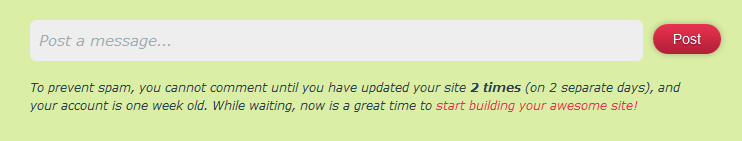

By default every website on Neocities should have a website profile page. You can access a profile URL by going to https://neocities.org/site/[your url], all website profile pages are in lower-case.
A user has the option to opt-out of having a website profile page/being able to have other user's post on their profile page, by going to https://neocities.org/settings/[your url], and selecting the opt-out option. If a user ops-out of having a profile page, then https://neocities.org/site/[your url] will redirect to https://[your url].neocities.org/
A website profile page should show a number of things, such as a screencap of the latest update, people who follow you, and comments you post. A website profile will also show how many views, followers, updates, and tips a site has, along with what tags the site uses.

Along with updates by the user, other members of Neocities can leave messages on update logs, along with just making a new post on a user's profile wall.
After a new member of Neocities joins, they will be unable to make any posts, and will not be able to reply to a post made by any other user. This was made to help fight spam on Neocities. Once a user is one week old, and has made at least two updates (on two separate days) then they may interact with other users.
II. ...can been seen with other files types, such as with JPG, and GIF files... https://neocities.org/site/owlman?event_id=110557
This page was last updated: 04/09/2018 @ 16:45
In total this page has had 1 updates since it was uploaded.